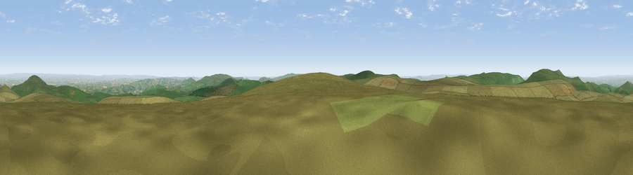

Hangingstone Hill
#5453 in England · top 7% of its area beats it · —The view, rendered

A 360° render of this exact spot computed from the terrain model, tree cover and land cover — summer colours, afternoon light, calibrated against photographs of famous viewpoints. Real trees, hedges and buildings will differ in detail.
The panorama
Grey silhouette: terrain skyline in each direction (720 bearings, Earth curvature and refraction included). Dashed green: skyline with trees (+15 m) and buildings (+8 m) as obstacles. Blue strip: how far the ground is visible on each bearing.
Where the view opens
Wedge length = distance to the farthest visible ground on that bearing (vegetation-aware). Rings at 10, 25 and 50 km.
What fills the view
89% grassland · 8% woodland · 3% cropland
Angular shares of the visible panorama (visual magnitude), not map area. Landscape diversity 0.19 (0–1 Shannon).
Key numbers
More beautiful places nearby
The staircase of upgrades: each row has a higher view potential than everything closer. Driving times are estimates from straight-line distance, calibrated against real road routing — check an actual route before setting out.
| Place | Direction | Drive | Score |
|---|---|---|---|
| High Willhays | NW · 5 km | ~11 min | 76.4 |
| Yes Tor | NW · 5 km | ~12 min | 78.5 |
| Viewpoint near North Bovey | ESE · 12 km | ~22 min | 79.3 |
| Cairn | ESE · 16 km | ~29 min | 79.8 |
| Viewpoint near Haytor Vale | ESE · 17 km | ~30 min | 80.1 |
| Viewpoint near Dousland | SSW · 17 km | ~30 min | 81.0 |
| Shell Top | S · 22 km | ~37 min | 81.8 |
| Viewpoint near Lee Moor | SSW · 24 km | ~39 min | 82.7 |
50.65845, -3.95764 · source: osm peak · position refined by local search. Computed location — check access rights before visiting.